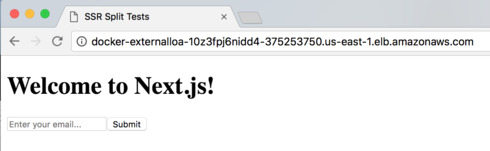

[GDD] Production Orchestration (Part 3 of 3) 08 December 2018
No need for the formalities at this point!
Let’s jump right in.
First, connect to your cluster from your infrastructure directory.
cd ~/dev/infrastructure
sh connect.sh
The easiest way to get these is simply git cloning our repo over http. You can also set up an ssh key on this machine for convenience - follow the tutorial on Github for “Linux” to do so if you don’t know how. I suggest using a password.
We’ll also need to install git on our server.
sudo apk update
sudo apk add git
git clone https://github.com/patrickleet/split-test-tutorial.git
cd split-test-tutorial
# if you are using my repo instead of yours,
# checkout the stack/stack branch
git checkout stack/stack
Now we can follow the same exact process that we ran on our local cluster
docker network create --driver=overlay proxy
docker stack deploy -c proxy.yml proxy
# deploy
VERSION=1.1 docker stack deploy -c stack.yml split-test
If all went well, that url should show our newly deployed application, as port 80 is being routed to it.

Of course, it’d be better if it was your own domain name…
More on that later… let’s see what else this thing can do!
How about scaling this service? Let’s run 3 instances of it.
$ docker service scale split-test_split-test=3
split-test_split-test scaled to 3
overall progress: 3 out of 3 tasks
1/3: running [==================================================>]
2/3: running [==================================================>]
3/3: running [==================================================>]
verify: Service converged
docker stack ps split-test
You should see three instances. Scaling done.
To see logs, run
docker service logs split-test_split-test
And lastly for today, let’s kill one of them and see what happens!
First, let’s ssh into the worker node where they are running - it’s listed in the docker stack ps command we just ran above.
Mine is ip-172-31-13-134.ec2.internal
$ ssh ip-172-31-13-134.ec2.internal
The authenticity of host 'ip-172-31-13-134.ec2.internal (172.31.13.134)' can't
be established.
ECDSA key fingerprint is SHA256:zxGsqNZlb7zX5d+1x55s8p4a7ntC8sj9kg6kVQG0zsI.
Are you sure you want to continue connecting (yes/no)? yes
Warning: Permanently added 'ip-172-31-13-134.ec2.internal,
172.31.13.134' (ECDSA) to the list of known hosts.
Welcome to Docker!
~ $
We’re in! Earlier when we created the connect.sh script, the -A flag we used is what allows this command to work. It signifies that they same key should be used to connect on ssh calls from the ssh’d into machine.
Run docker container ls to see the containers running on this node. Copy and paste this output to a wide monitor to read it easily.
fef8f2af18ff patrickleet/split-test:1.1 "npm run start"
5 minutes ago Up 5 minutes (healthy) 3000/tcp
split-test_split-test.2.4eb8sf12g96ble7oq7djcte7g
91e58cd5bb52 patrickleet/split-test:1.1 "npm run start"
5 minutes ago Up 5 minutes (healthy) 3000/tcp
split-test_split-test.3.g000j6d3jjhaqkpvhfl0vym10
876b8190dcff patrickleet/split-test:1.1 "npm run start"
8 minutes ago Up 8 minutes (healthy) 3000/tcp
split-test_split-test.1.by6dleimnk9h5iv5q93lf5jzs
79712263600d vfarcic/docker-flow-proxy:18.04.06-12 "/sbin/tini -g --
do…" 12 minutes ago Up 12 minutes (healthy) 80/tcp, 443/tcp, 8080/tcp
proxy_proxy.1.p1v32k2ak1cc827r2asdz32jm
a530882f4d96 docker4x/guide-aws:18.03.0-ce-aws1 "/entry.sh"
6 hours ago Up 6 hours
guide-aws
c520ba419ffb docker4x/shell-aws:18.03.0-ce-aws1 "/entry.sh /usr/
sbin…" 6 hours ago Up 6 hours 0.0.0.0:22->22/tcp
shell-aws
What happens if we remove one of the containers running our application - simulating the process failing. Copy the “id” of the container you want to kill.
Then run:
docker container kill fef8f2af18ff
We told swarm we wanted three containers, so if it notices the system is ever running less, it will adjust by creating new containers to satisfy the constraint we set earlier.
Fault tolerance - done.
Pretty powerful stuff! We’re really only scratching the surface here.
And tomorrow is the second to last lesson!
Patrick “Production Orchestrator” Scott